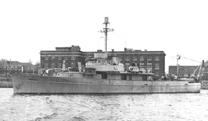

|  copyright - WHOI |
|
From 1945 through 1948 Mentor was used jointly by the US Navy,
the US Geological Survey, and WHOI. The vessel spent the majority of her
time in the Gulf of Mexico doing gravity work and later was used for acoustical
work in the New England region and out to Bermuda. In 1950, Mentor
was returned to the Navy and scrapped.